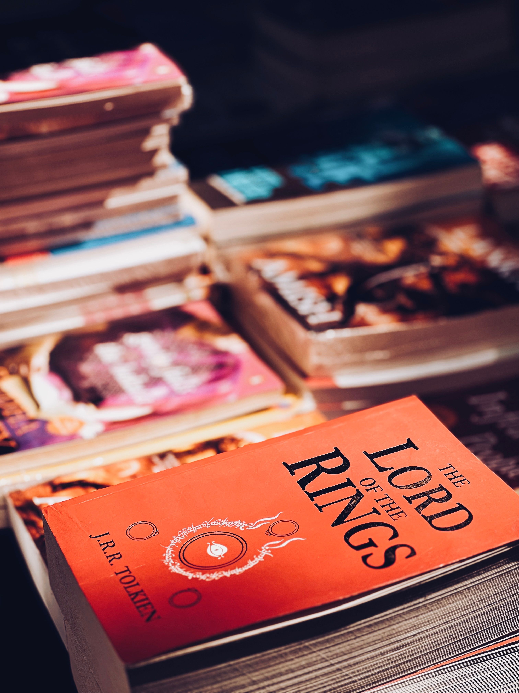
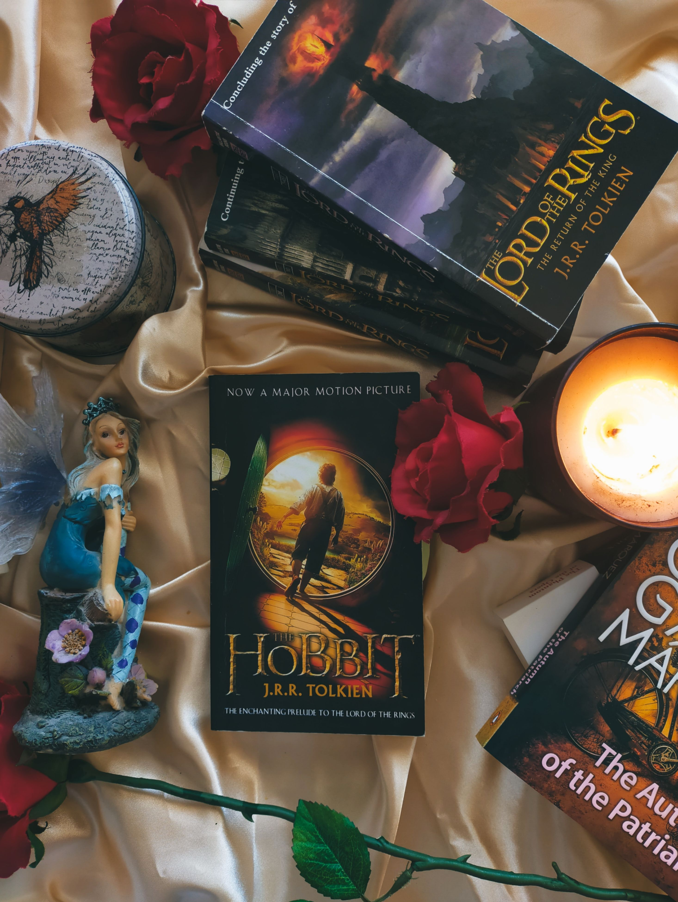

Tous les livres de Tolkien
Voici la liste complète (ou presque !) des livres écrits par J.R.R. Tolkien.
Pour chaque ouvrage, tu trouveras une courte description, les notes de la communauté et un lien pour lire ou ajouter une critique.

Le Seigneur des Anneaux — La Communauté de l’Anneau
Note moyenne : ⭐⭐⭐⭐⭐ (4,8/5)
Résumé :
La grande aventure commence ! Frodon Sacquet, héritier de l’Anneau Unique, quitte la Comté en compagnie de Gandalf, Aragorn, Legolas, Gimli et les autres membres de la communauté.
Avis récents :
« Une épopée inoubliable ! » — Arwen77
« Des paysages grandioses décrits avec poésie. » — Gandalf_Gris

Le Silmarillion
Note moyenne : ⭐⭐⭐⭐☆ (4,5/5)
Résumé :
Un recueil mythologique racontant la création d’Arda, la guerre des Silmarils, la chute de Morgoth et la destinée des Elfes.
Avis récents :
« Dense, mais fascinant pour les fans de lore. » — Elrond_Lorekeeper

Les Contes Perdus et Légendes Inachevées
Note moyenne : ⭐⭐⭐⭐☆ (4,3/5)
Résumé :
Des histoires inachevées mais passionnantes, révélant des facettes méconnues des héros et lieux de la Terre du Milieu.
Avis récents :
« J’adore creuser ces mystères ! » — BilboBookworm

Lettres de Père Noël
Note moyenne : ⭐⭐⭐⭐⭐ (4,9/5)
Résumé :
Une compilation émouvante des lettres illustrées que Tolkien envoyait à ses enfants pour Noël, sous le nom du Père Noël.
Avis récents :
«Il y a un coeur drrière la plume.» — Bilbon Seqouet
👉 Envie d’ajouter ton avis ?
Connecte-toi ou crée un compte pour noter les livres et partager tes propres critiques !
